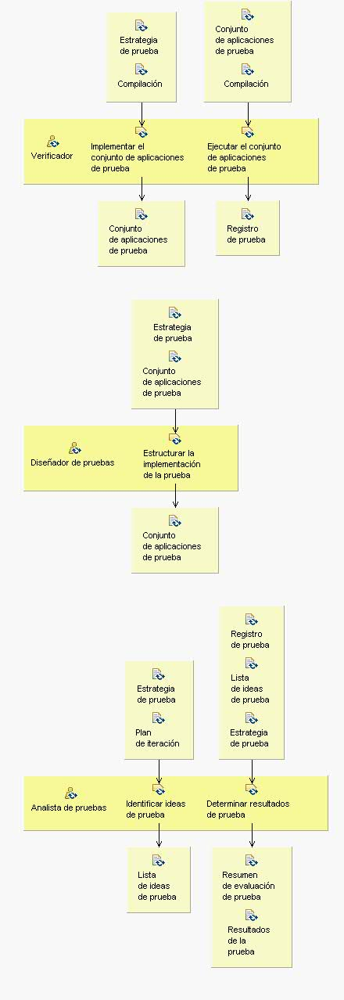

| Actividad: Probar y evaluar |
 |
|
| Descripción | Estructura de desglose de trabajo | Asignación de equipos | Utilización del producto de trabajo | ||||||
Flujo de trabajo
|  |
Anomalía del trabajo
© Copyright IBM Corp. 1987, 2006. Reservados todos los derechos. |
Flujo de trabajo
Anomalía del trabajo
|
||||||||||||||||||||||||||||||||||||||||